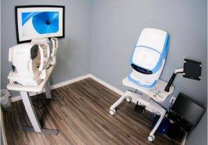
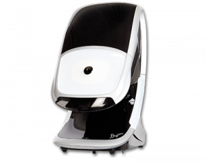

Technology – Advanced Eye Care
We use cutting-edge digital imaging technology to assess your eyes. Many eye diseases, if detected at an early stage, can be treated successfully without total loss of vision. Your retinal Images will be stored electronically. This gives the eye doctor a permanent record of the condition and state of your retina.

Digital Retinal Imaging
This is very important in assisting your Optometrist to detect and measure any changes to your retina each time you get your eyes examined, as many eye conditions, such as glaucoma, diabetic retinopathy and macular degeneration are diagnosed by detecting changes over time.
The advantages of digital imaging include:
- Quick, safe, non-invasive and painless
- Provides detailed images of your retina and sub-surface of your eyes
- Provides instant, direct imaging of the form and structure of eye tissue
- Image resolution is extremely high quality
- Uses eye-safe near-infra-red light
- No patient prep required
Digital Retinal Imaging
Digital Retinal Imaging allows your eye doctor to evaluate the health of the back of your eye, the retina. It is critical to confirm the health of the retina, optic nerve and other retinal structures. The digital camera snaps a high-resolution digital picture of your retina. This picture clearly shows the health of your eyes and is used as a baseline to track any changes in your eyes in future eye examinations.
Visual Field Testing
A visual field test measures the range of your peripheral or “side” vision to assess whether you have any blind spots (scotomas), peripheral vision loss or visual field abnormalities. It is a straightforward and painless test that does not involve eye drops but does involve the patient's ability to understand and follow instructions.
An initial visual field screening can be carried out by the optometrist by asking you to keep your gaze fixed on a central object, covering one eye and having you describe what you see at the periphery of your field of view. For a more comprehensive assessment, special equipment might be used to test your visual field. In one such test, you place your chin on a chin rest and look ahead. Lights are flashed on, and you have to press a button whenever you see the light. The lights are bright or dim at different stages of the test. Some of the flashes are purely to check you are concentrating. Each eye is tested separately and the entire test takes 15-45 minutes. These machines can create a computerized map out your visual field to identify if and where you have any deficiencies.
OPTOS Retinal Exam

Annual eye exams are vital to maintaining your vision and overall health. We offer the optomap® Retinal Exam as an important part of our eye exams. The optomap® Retinal Exam produces an image that is as unique as you fingerprint and provides us with a wide view to look at the health of your retina. The retina is the part of your eye that captures the image of what you are looking at, similar to film in a camera.Many eye problems can develop without you knowing. You may not even notice any change in your sight. But, diseases such as macular degeneration, glaucoma, retinal tears or detachments, and other health problems such as diabetes and high blood pressure can be seen with a thorough exam of the retina.
An optomap® Retinal Exam provides:
- A scan to show a healthy eye or detect disease.
- A view of the retina, giving your doctor a more detailed view than he/she can get by other means.
- The opportunity for you to view and discuss the optomap® image of your eye with your doctor at the time of your exam.
- A permanent record for your file, which allows us to view your images each year to look for changes.
The optomap® Retinal Exam is fast, easy, and comfortable for all ages. To have the exam, you simply look into the device one eye at a time and you will see a comfortable flash of light to let you know the image of your retina has been taken. The optomap® image is shown immediately on a computer screen so we can review it with you.
Please schedule your optomap® Retinal Exam today!
Daytona

For many eyecare patients, having pupils dilated (opened up) using eye drops can be a bother. But as an integral part of a truly comprehensive eye exam, those drops are highly recommended. Dilation gives your eye doctor the widest view of the internal structures at the back of the eye—the optic nerve, retina, even blood vessels.How does Daytona Optomap work?
It’s very similar to sitting down in a type of photo booth and leaning forward to have your picture taken. Except in this instance, the picture being taken is a larger, wide-field image of the inside of your eyeball. Optomap takes around a minute.
Daytona is smaller and still provides ultra-high resolution imaging, and adding ultra-widefield autofluorescence capabilities. This device can take around a 200-degree image of the retina in one image. Most cameras can only capture the posterior pole (that include the macula and optic nerve head), but the Daytona can view the peripheral retina as well.
Patients find this device very exciting. To be able to easily image a patient’s retina and then be able to review it with them in the exam room is a great educational tool and a valuable way of comparing changes over time.
Since retina scanning is so important in the early detection of cataracts, diabetic eye disease, glaucoma, age-related macular degeneration and more, it’s pretty easy to see why Optomap technology is so promising. Optomap retinal exams are not available everywhere, however. And in some instances, these scans may not be covered by traditional insurance due to cuts in eye doctor reimbursements.
Ready to see clearly?
Book a comprehensive eye exam with Carey Brooks, OD in Frisco, TX.